Bagnols-en-Forêt
Une maison rénovée pour vivre dedans comme dehors.
La Maison B-Sun accueille jusqu’à 6 personnes avec 3 chambres, 3 salles de bain, une piscine privée, un séjour lumineux, une cuisine rénovée et une vraie continuité entre intérieur, terrasse et jardin.
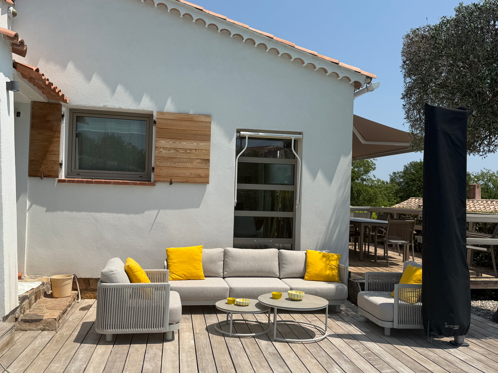
La maison
Une vraie vue d’ensemble, avant de réserver.
La Maison B-Sun est une maison rénovée sur un terrain de 1 000 m², pensée pour des vacances en famille ou entre amis. L’objectif de cette page est volontairement simple : montrer la maison telle qu’elle se vit, pièce par pièce, avec de vraies photos et une lecture rapide du lieu.
Vous êtes à 1 km de Bagnols-en-Forêt pour les courses et les restaurants, à environ 20 minutes des plages, et bien placé pour rayonner vers Sainte-Maxime, Cannes, Saint-Tropez ou Nice.
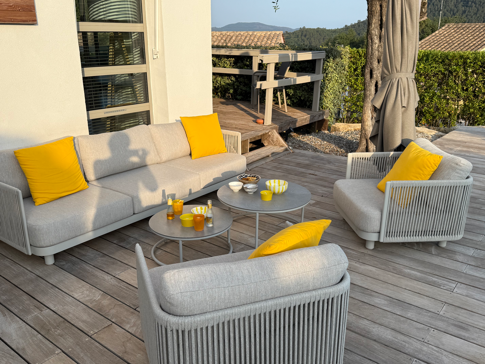
Les pièces
Une visite pièce par pièce de la maison.
Ici, les photos servent à comprendre les espaces. Les chambres ne sont pas résumées en une seule image et le séjour est montré sous plusieurs angles pour mieux se projeter.
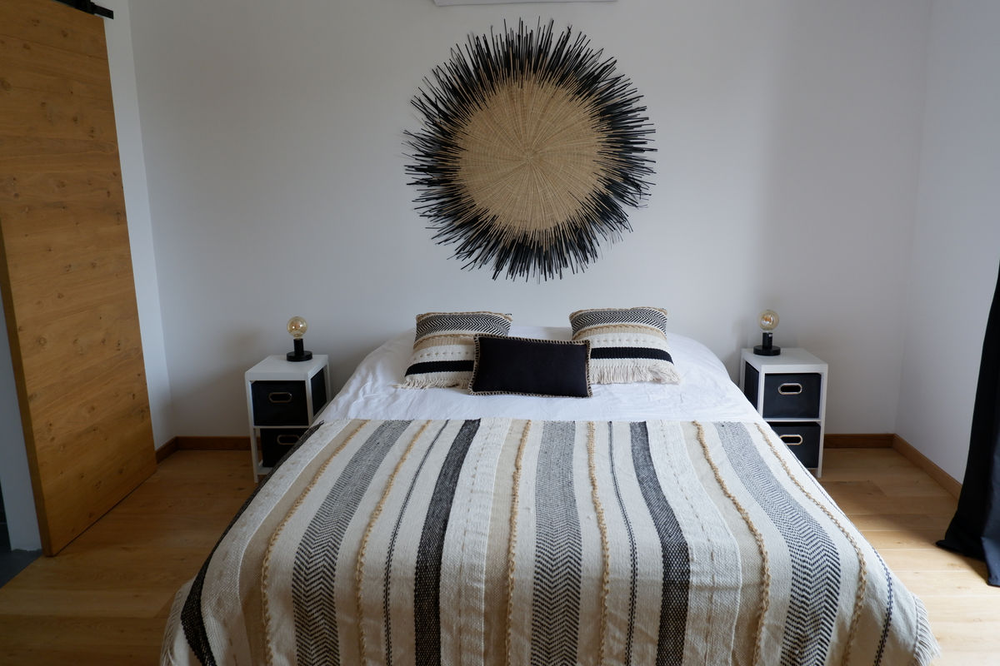
Chambre 1
Une première chambre double dans une ambiance naturelle et reposante.
Cette chambre donne le ton de la maison : lignes simples, lumière douce, bois clair et décoration discrète. Elle convient bien à ceux qui veulent un espace vraiment calme en fin de journée.
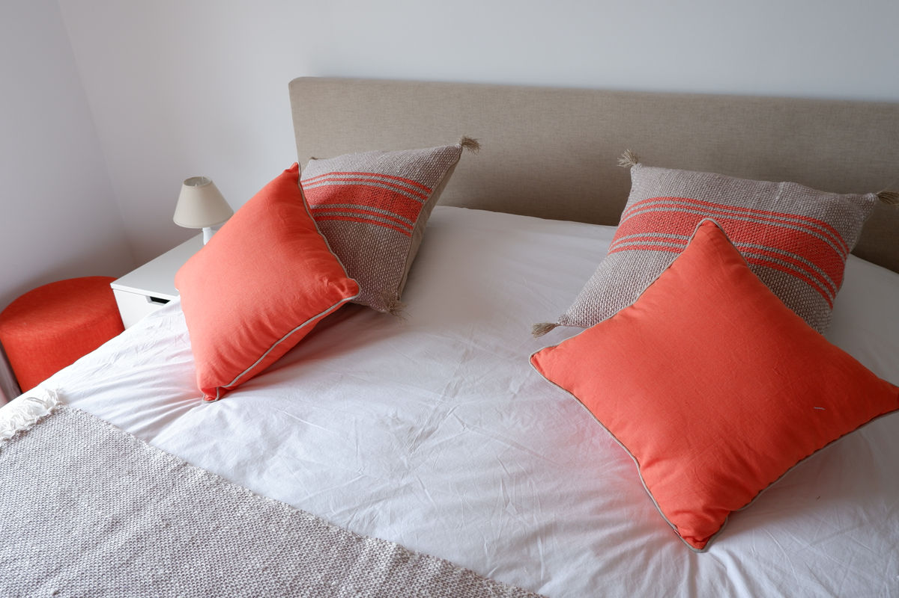
Chambre 2
Une seconde chambre plus douce, avec des tonalités plus chaudes.
Cette chambre apporte une autre ambiance, plus solaire, sans rompre l’unité du lieu. À deux ou en famille, cela permet de mieux visualiser que les chambres ont chacune leur caractère.
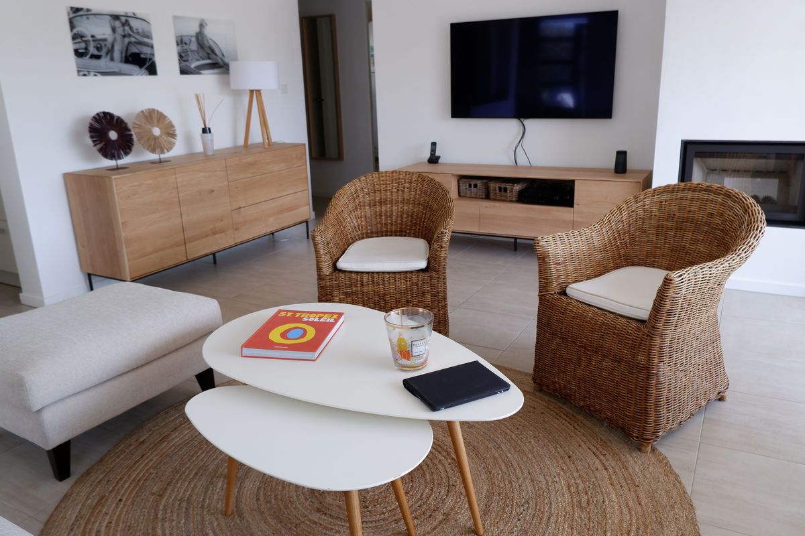
Séjour
Une pièce de vie spacieuse, ouverte et facile à habiter.
Le séjour réunit l’espace salon, la télévision et la cheminée dans une pièce claire qui reste agréable aussi bien pour les matinées calmes que pour les retours de plage ou les soirées à la maison.
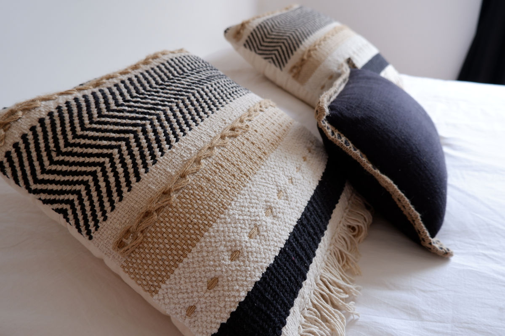
Détail chambre
Les chambres ont été pensées avec plus de soin que de surcharge.
Les matières, les coussins et les contrastes donnent aux pièces une identité simple mais réelle, loin d’une chambre standardisée.
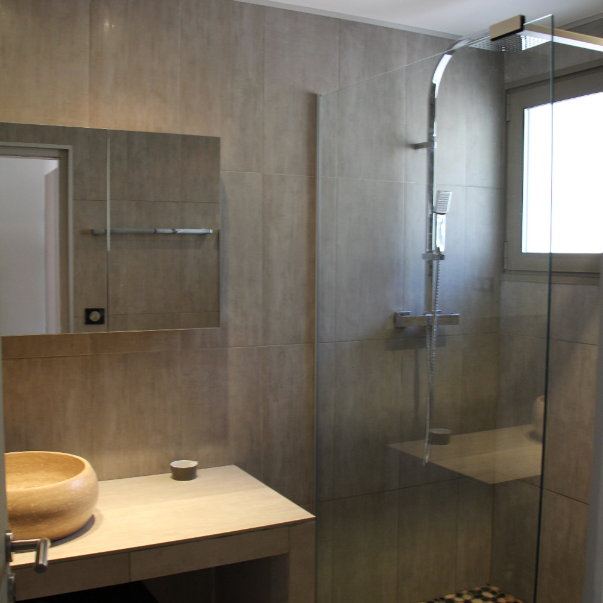
Salles de bain
Trois salles de bain pour un séjour plus fluide à plusieurs.
Le fait d’avoir 3 salles de bain change vraiment le confort du séjour quand la maison est occupée par plusieurs adultes ou par une famille.
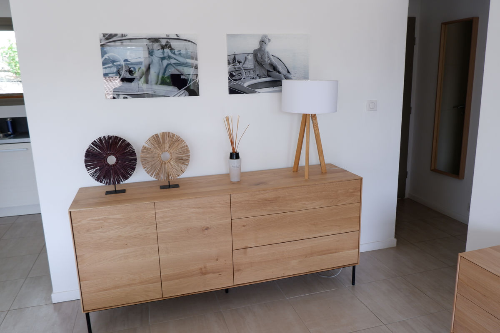
Cuisine
Une cuisine rénovée, claire et pratique au quotidien.
Elle fonctionne aussi bien pour préparer un petit-déjeuner tranquille que pour cuisiner simplement au retour du marché.
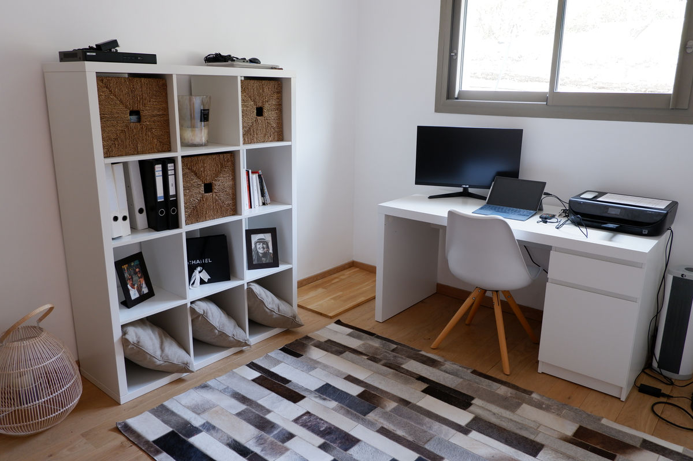
Bureau
Un coin bureau discret, utile sans envahir la maison.
Wi-Fi sur place, un vrai plan de travail et suffisamment de calme pour traiter quelques dossiers ou organiser les sorties.
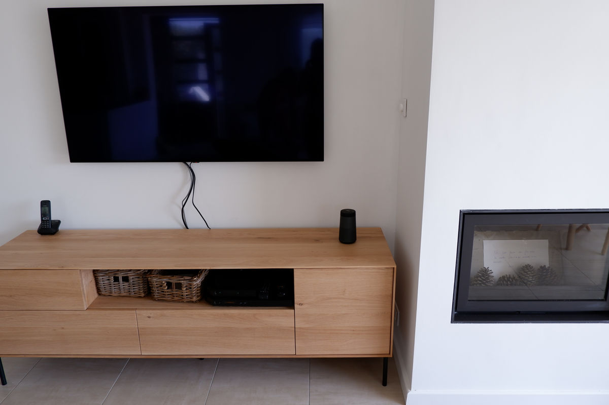
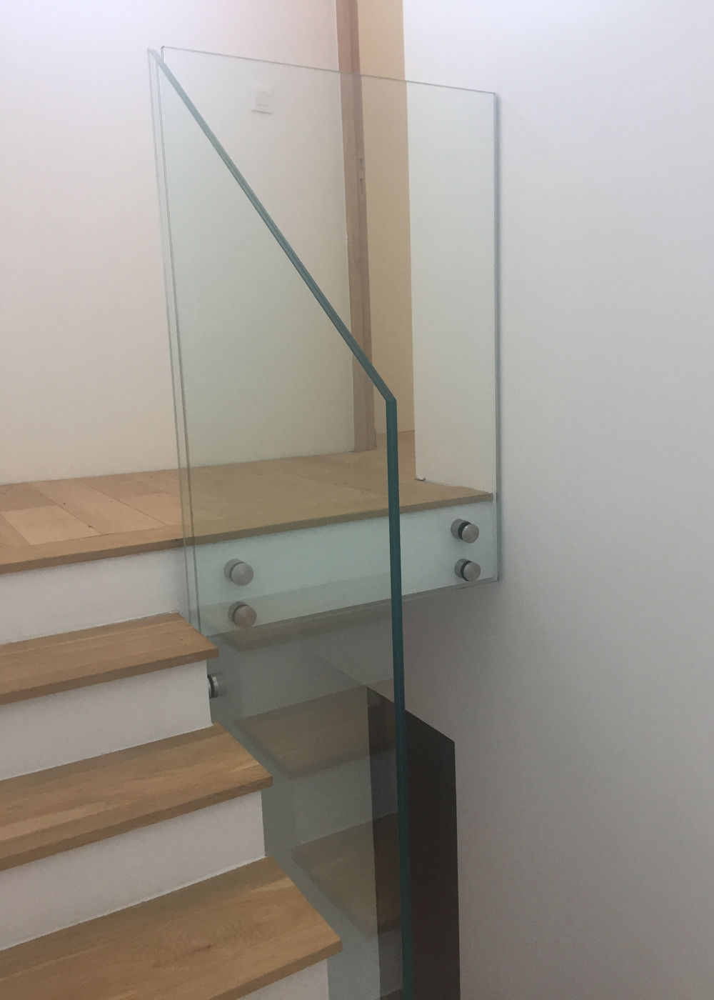
Détails
Le séjour et la circulation gardent la même logique de rénovation.
On retrouve partout la même écriture : matériaux simples, mobilier sobre, peu d’encombrement visuel et une maison qui se lit facilement, sans effet décoratif forcé.
Extérieurs
La terrasse et la piscine prennent ici toute la place.
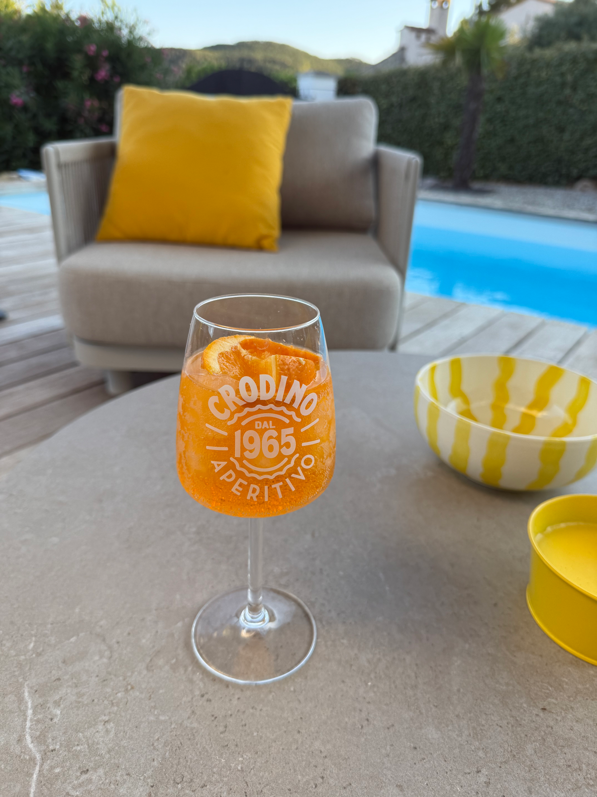
Les beaux jours se passent naturellement dehors. La piscine privée de 3 x 7 m, la terrasse et le salon extérieur donnent à la maison son vrai rythme de vacances, plus encore que de simples “équipements”.
On peut facilement imaginer une journée simple : marché le matin, déjeuner dehors, baignade l’après-midi, puis soirée tranquille à la maison.
Infos pratiques
Les informations essentielles, sans surcharge.
Wi-Fi, TV et 2 places de parking
Les équipements utiles sont déjà en place pour un séjour simple.
Bagnols-en-Forêt à 1 km
Boulangerie, supermarché, restaurants et commodités à proximité.
Sainte-Maxime, Cannes, Saint-Tropez, Nice
Une bonne base pour découvrir la région sans être isolé.
Contact
Pour plus d’informations, contactez-nous directement.
Pas de système de réservation automatique pour le moment. Les demandes passent directement par mail ou par téléphone.
Pour les demandes d’informations et de disponibilité.
Un second contact direct pour répondre rapidement à vos questions.
Appelez-nous directement pour échanger sur les dates et le séjour.